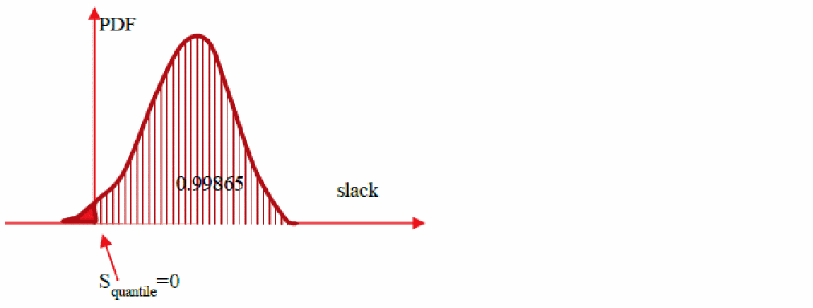
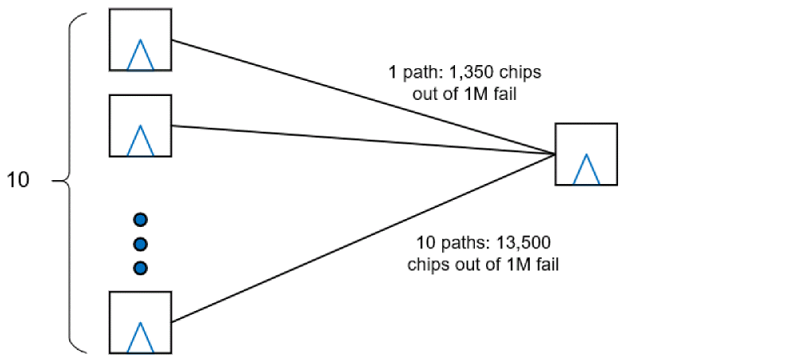

Parametric Timing Robustness Analysis
- Parametric Timing Robustness (PTR) Analysis Overview
- Library Requirements
- Early/Late Sigma LVF
- LVF Moment Models
- Enabling PTR Analysis
- PTR Analysis Reports
Parametric Timing Robustness (PTR) Analysis Overview
Tempus supports Parametric Timing Robustness (PTR) analysis capabilities that can be leveraged to calculate the probability of the entire chip meeting timing, instead of relying on the probabilities on individual paths meeting timing to compute the robustness of a chip.
In traditional SOCV timing analysis, the moments of delays and slews calculated at the arc and instance level are propagated through the paths in the design and Arrival Time, Slack distributions are computed at the path endpoints.
In the following example, the 99.865 quantile values of the endpoint slack distributions show the probability of the paths to the given endpoint meeting timing.
The figure below is the slack distribution of a given path with 99.865 percentile slack of zero. This means that the area under slack’s PDF on the right of zero is exactly 0.99865, and on the left of zero it is 0.00135. The area on the left of zero corresponds to samples (chips) where slack of this path is negative (failing path). In other words, out of 1 million samples (chips) there will be about 1,350 of them where this path fails.

Similarly, in a case with 10 similar paths ending at the same end-point and all having 99.865 percentile slack of zero, assuming that the slack of each path is an independent random variable, the probability of each of them to fail is 0.00135, and then the probability of at least one of them to be negative is Pneg =1 – (1-0.00135)^10 =0.0134, which means that the probability of the end point to have negative slack (fail) is almost 10x of that of each individual path.
Considering 1M samples (chips), in this situation 13,400 of them will fail due to that end-point.

Similarly, when we consider 1M such endpoints, the probability of all of them to have non-negative slack is 0.99865^10000000, which is nearly zero. This means nearly all samples (chips) will fail.
However in reality, chips work with reasonably high robustness, even though they are optimized to make end-point’s quantile slacks close to zero. This is because paths and end-points exhibit a non-zero correlation, and hence the calculation of probability used above is not valid.
In SOCV slacks are random variables, which are results of statistical addition of delays on the paths leading to end-points. If paths have common parts, the end-points’ slacks are not independent variables, or in other words, have non-zero covariance (correlation). Computing correlation between end-point’s slacks is very tedious task, leading to at least quadratic complexity over number of paths reported (and we will need to report slightly positive paths since the tails of their distributions will extend into negative slack region). This makes the correlation calculation through pair-wise common-portion calculation computationally unrealistic.
The Parametric Timing Robustness analysis models the correlation of paths in the computation of chip robustness, is akin to Monte-Carlo simulation. Here samples of delays and slews on each arc and pin are generated and propagated on both data and clocks paths such that correlation is modeled naturally in the computation of Arrival Time and Slacks. Any two paths crossing same arc will include same delay distribution as part of their ATs.
The PTR computed using this approach gives an accurate measure of the ‘actual’ chip robustness.
Library Requirements
The PTR analysis requires variation data to be characterized into the timing libraries. The Liberty Validation Format (LVF) has been adopted by the industry as a common vehicle for providing this information. The syntax for modeling the random variation of delays, transitions, and constraints with tables of sigma values is the most commonly available. Cadence Liberate® and Variety® characterization software and Tempus® sign-off timing analysis software are capable of creating and using more advanced models for improved accuracy at advanced nodes.
It is strongly recommended to use moment-based LVF models in PTR Analysis in Tempus for good accuracy.
Early/Late Sigma LVF
The variation data modeled in traditional LVF provides Liberty ocv_sigma_* tables for delays, transitions, and timing checks. These represent the variation offset from the nominal values contained in the related NLDM table data. This data is specified in terms of 1-sigma.
The LVF allows separate specification of a sigma value for early path analysis vs. late path analysis. The sigma_type syntax identifies which ocv_sigma_* tables are used for what purpose. In cases where the mean of the distribution is not aligned with the nominal value, having separate characterizations can help improve accuracy. The constraint variation tables do not support separate early and late sigma values.
| LVF Early/Late Sigma Groups | Purpose |
LVF Moment Models
The advanced nodes (< 16nm) and ultra-low VDD's can produce distributions that are strongly non-Gaussian, thereby exhibiting both mean-shift and skewness effects. As a result, three additional models were included in the LVF delay, transition, and constraint variation set. These models represent the three top central moments of the distributions. It is strongly recommended to use these moments-based modes for PTR analysis in Tempus.
The new constructs do not replace the existing ocv_sigma_* constructs already in use. The LVF consuming applications will decide how best to utilize the older and newer constructs together for the best possible results.
With the exception of the sigma_type attribute, the new constructs use the same syntax as the existing LVF sigma constructs.
| LVF Early/Late Sigma Groups | Purpose |
Enabling PTR Analysis
The PTR analysis flow can be enabled using the following setting:
set_db timing_analysis_enable_robustness_mode true
License Requirements for PTR Analysis
PTR analysis requires the tpsng license.
PTR Analysis on Clock Paths in PBA Mode
PTR analysis is performed on clock paths in PBA mode for better accuracy. The setting to enable this is
set_db timing_disable_retime_clock_path_slew_propagation false
Delay Calculation Controls - Use of Moments LVF
LVF libraries with moments data are strongly recommended for PTR analysis. The setting to read in moments LVF data is
set_db delaycal_socv_lvf_mode moments
Accuracy Modes
PTR analysis is performed in the highest accuracy mode of statistical analysis. The setting to enable this is:
set_db delaycal_socv_accuracy_mode ultra
PTR Analysis Reports
The PTR score of a design, which is a statistical measure of the timing slack for the whole design can be reported using the report_timing_robustness command. This command reports the percentage of parts (to be manufactured) which meet timing at all end points.
The report_timing_robustness analysis command reports the PTR score of a given design based on the following steps:
- Enumerates all the instances in the design.
- Identifies paths that are critical for PTR of the design.
- Computes the PTR based on Monte Carlo analysis.
The following example shows the final PTR value:
report_timing_robustness -check_type setup -path_group R2R -target_PTR 0.8 -run_time_limit 15
collecting paths and reporting PTR ......
Final PTR 0.89735
set P1 [report_timing_robustness -check_type setup -path_group R2R -target_PTR 0.95 -run_time_limit 15]
collecting paths and reporting PTR ......
Final PTR 0.91295
report_property $P1
----------------------------
property | value
----------------------------
slack_mean | 0.961705
slack_ptr | 0.912950
slack_quantile | -2.085161
slack_skewness | -0.668439
slack_stddev | 0.682927
----------------------------
Return to top